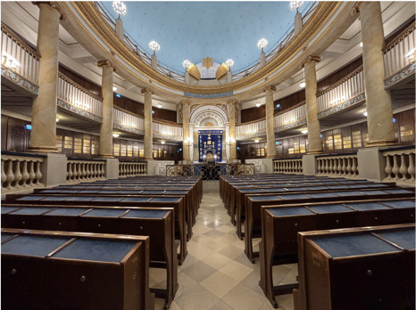
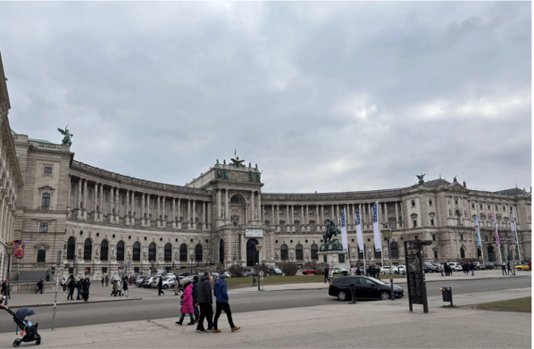
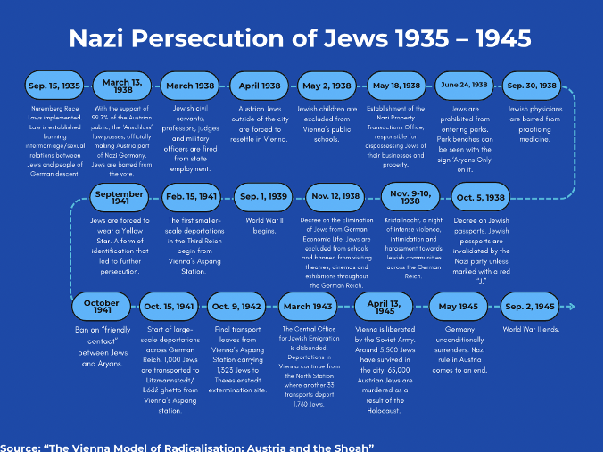
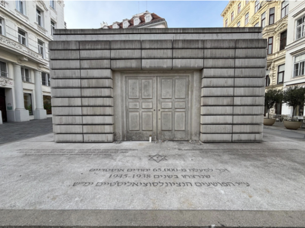
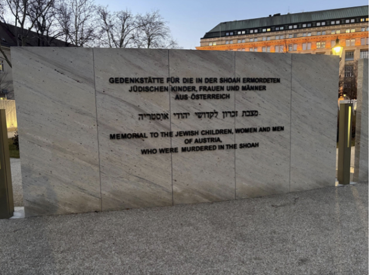
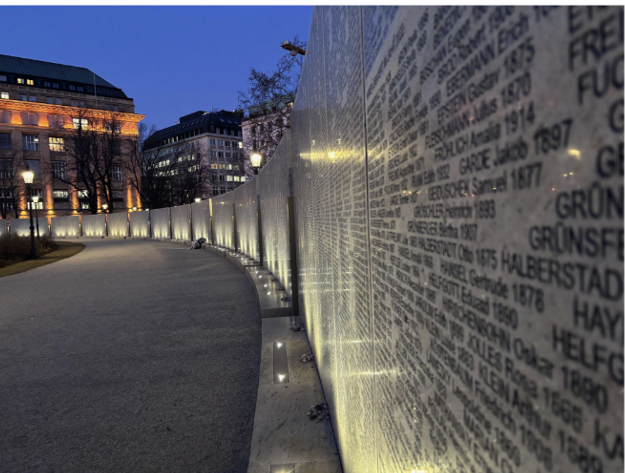
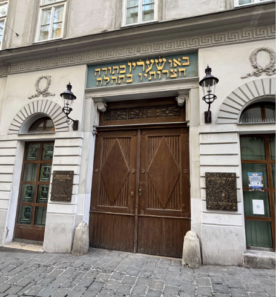

A City Set Ablaze, A Community Erased
VIENNA – The streets of Vienna burned with a fury of hatred on the night of November 9, 1938. The air was thick with smoke as flames consumed synagogues, Jewish-owned businesses lay in ruin, and shattered glass blanketed the streets—so much so that the night became infamously known as Kristallnacht, the Night of Broken Glass
Across the Nazi-occupied German Reich, the night marked an unprecedented escalation of antisemitic violence. Roughly 7,500 Jewish businesses were looted and destroyed, 1,406 synagogues were set on fire, and at least 1,300 to 1,500 Jews were murdered. Jewish homes were invaded, their residents brutalized and arrested, while Nazi officials ordered police and firefighters to stand down.
Vienna was no exception. The city’s Jewish community—once a thriving part of its culture and intellectual life—became a primary target. In a single night, 93 synagogues were burned to the ground, and around 6,000 Jews were deported to the Dachau concentration camp. But amid the devastation, one synagogue in the city survived—the Stadttempel, Vienna’s City Temple.
Built between 1825 and 1826, the City Temple was the only synagogue permitted within Vienna’s inner city. Its survival was not an act of mercy, but a matter of practicality. Regulations had required it be architecturally integrated with surrounding buildings, and destroying it would have risked damaging non-Jewish properties. A synagogue that had long served as the religious and cultural epicenter of Vienna’s Jewish community became the sole survivor and figure in the community’s revival post-Holocaust.
Built between 1825 and 1826, the Stadttempel (City Temple of Vienna) is the longest-surviving synagogue in the city of Vienna – the only in the city to survive Kristallnacht. The temple has long served as a religious and cultural hub for Vienna’s Jewish community. (Photo by Matthew Shea)
Before Austria was annexed by Nazi Germany, Vienna was home to 167,249 Jews – large enough to fill Madison Square Garden eight times over. When the Nazis surrendered in 1945, the Jewish population of Vienna had been reduced to half of one MSG arena.
Today, the Stadttempel remains the only pre-war synagogue in Vienna still in use. Far more than just a house of worship, it stands as a remnant of a nearly erased community – a link to Vienna’s Jewish past and the heartbeat of its present.
I was able to experience this history firsthand. On a guided tour of the Stadttempel, I walked through its restored sanctuary, where the weight of its past was palpable. Through these tours, the temple keeps the memory of the Holocaust and Vienna’s Jewish history alive. My guide, Vit Lichtenstein, shared the stories of those who worshipped here before World War II and those who returned after it—fragments of a once-thriving community.
To understand what this temple represents, one must go back to the beginning—the moment Austria welcomed the Nazis with open arms and set the stage for the near-total destruction of its Jewish community.
How did the Nazi annexation change life instantaneously for Vienna’s Jewish population?
“The entry of Hitler’s army into Austria in March 1938 triggered unprecedented suffering and hardship for Vienna’s Jews. Grave acts of violence against the Jewish population began to proliferate.” – The City of Vienna
In March of 1938, Austrian Chancellor Kurt Schuschnigg found himself – and his country’s independence – under intense domestic and international pressure. At home, many Austrians, influenced by the events transpiring in Nazi Germany, were becoming openly supportive of the Nazi regime and a potential takeover of their country. At the same time, Schuschnigg was receiving demands and threats from Nazi dictator Adolf Hitler. Most recently had been a request asking Schuschnigg to appoint an Austrian Nazi Party leader as the country’s Minister of the Interior and Security.
Losing a grip on the nation, Schuschnigg made a final stand. On March 9, 1938, he announced a referendum to affirm Austria’s status as an independent nation and propel an impending Nazi annexation. But any hope for an Austria free of Nazi rule was soon lost. Two days later, the chancellor received an ultimatum from the Reich Chancellery in Berlin. An outraged Hitler had sent a demand: Schuschnigg was to postpone the referendum or face the wrath of the Nazi armed forces, otherwise known as the Wehrmacht.
Hours later, a second ultimatum was received. This time, Hitler demanded that the Austrian chancellor step down. Facing immense pressure, Schuschnigg cancelled the referendum and resigned. That night, to the warm greetings of many, Nazi forces crossed into Austria as they took power. The Nazis did not bring hatred with them into the city – it was already rampant. “Antisemites would say things before 1938 like, ‘Vienna is so horrible because the city is Jewish. So the antisemitic association linked Vienna to Jewish presence, and then said it was bad,” said
Frances Tanzer, a Professor of Holocaust Studies and Modern Jewish History and Culture at Clark University. “And these are obviously stereotypes, this is not reality.”
Before the annexation, Viennese Jews had experienced antisemitic abuse from ordinary civilians. The arrival of Hitler in Austria worsened an already dark situation for Vienna’s Jewish community.
On March 13, 1938, with the support of 99.7% of the Austrian public, the Law on the Reunification of Austria with the German Reich, also known as the ‘Anschluss law’, officially made Austria part of Nazi Germany. Jews had been barred from the vote. Two days later, Hitler stood from the balcony of Neue Hofburg Palace in Vienna’s Heldenplatz as he delivered his annexation speech to hundreds of thousands of cheering Austrians.
“Austrian Nazis very much participated in the process of taking over of the state. So it was not really an invasion,” said Michaela Raggam-Blesch, who has served as a research fellow at the Department of Contemporary History at the University of Vienna since 2018. “In fact, before the first German soldier crossed the border, Austrian National Socialists had already taken over most institutions.”
The Neue Hofburg Palace (modern day), located in Heldenplatz, was the spot where on March 15, 1938, Adolf Hitler delivered his annexation speech to hundreds of thousands of cheering Austrians. (Photo by Matthew Shea)
For Jews in Vienna, life was disrupted in a way not yet seen in other parts of the Third Reich. Nazi control not only reinforced Jew-hatred – it legalized it. Businesses identified to have Jewish ownership were looted, graffitied with a Star of David, and boycotted. People of all ages gathered around and watched as Jews in Vienna were forced to scrub slogans in support of Austrian independence off the streets.
Survivor Testimony: “We lived in the 2nd district, on Krummbaumgasse. It was the center of religious Jewry…People were driven out of their flats and forced to scrub the streets with buckets and brooms and scrubbing brushes…The onlookers jeered, and not only that, they kicked them and poured buckets of water over people. But it wasn’t just water…”
– Documentation Centre of Austria Resistance (ed.), Jüdische Schicksale, Vienna 1993
On March 18, 1938, Nazi officials raided the Vienna Jewish Community offices and arrested their leadership. This was the beginning of a slippery slope for Vienna’s Jewish community.
Following the ‘Anschluss,’ the Nazis gradually implemented legislation that segregated the Jewish community and restricted them of their rights.
“The level of terror against the Jewish population after the “Anschluss” was unknown in Germany,” Raggam-Blesch said. “There, anti-Jewish legislation was introduced over the course of five years, while in Austria, it was implemented overnight.”
The basis of Nazi discrimination was the idea that Germans were members of a superior ‘Aryan’ race, while Jews, according to the Nazis, belonged to an inferior race and required separation. This radical ideology took legislative form in the Nuremberg Race Laws and other policies that ostracized Jews from society and stripped them of their most basic human rights.
“The Nuremberg Race Laws…were pivotal in the Nazi regime’s systematic persecution of Jews,” Lichtenstein said. “The implementation of these laws led to the social ostracization of Jews, barring them from various professions, educational institutions and public life.”
The level of antisemitism and intimidation reached a tipping point during Kristallnacht on Nov. 9–10, 1938. Despite being attacked internally that night, the surviving Stadttempel proceeded to become a crucial location for the Nazis during the war. The City Temple held all the records and archives of the Jewish community of Vienna, making it “a focal point for Gestapo” in their persecution efforts, according to Lichtenstein. Following Kristallnacht, Nazi policies became more severe.
“In Vienna, the violence [from Kristallnacht] was particularly severe,” Lichtenstein said. “This orchestrated violence shattered any remaining illusions of security for Austrian Jews, leading to a surge in emigration and marking a prelude to the Holocaust.”
As Jews in Vienna started to fear for their safety, many sought refuge in other countries to escape the antisemitic violence and bigotry faced under Nazi rule. From 1938 to 1941, over 120,000 Austrian Jews fled Vienna. 17,000 would later be caught by the Nazi regime. Most of the exiles never returned to Austria, according to Lichtenstein.
As Vienna’s Jewish population dwindled due to emigration, those who remained soon faced a grim fate. The Nazis turned their efforts towards the systematic removal of Jews from the city. What began as forced displacement shifted to a machine of deportation.
How did Vienna’s deportations become a model for the German Reich and speed up the reduction of the Jewish population?
“Once individuals defined as Jewish arrived in collection camps, they already stopped being a human being… They became a number,” – Dr. Raggam-Blesch
It was the night of Oct. 2, 1940, and Hitler was hosting a private dinner in his Berlin apartment. One guest was Baldur von Schirach, an Austrian politician who shared Hitler’s vision and was feeding off antisemitic enthusiasm from the populus. That night, Schirach came with a cruel vision for Vienna.
“Baldur von Schirach was a very ambitious politician. In the fall of 1940, during a private dinner with Adolf Hitler, he expressed his desire to ‘get rid’ of the Jewish population in Vienna,” Raggam-Blesch said.
At this point, Vienna was still the only city across the Third Reich to host a deportation – the transport of 1,600 Jews a year earlier. Schirach’s plan sought to expand the usage of Vienna as a testing ground for the German Reich and make it the first city ‘free of Jews.’
Hitler sat on this proposal for nearly two months. On Dec. 3, 1940, Hitler revealed to Schirach his decision to deport the remaining Jews in Vienna and place the blame on “housing shortages.”
“The party chancellery sent a written statement to Baldur von Schirach stating that the Führer had granted ‘the early deportation’ of the Viennese Jewish population,” Raggam-Blesch said. “It thereby referred to 60,000 persons, which was roughly the number of the remaining Jewish population in Vienna at that time.”
At the beginning of 1941, Vienna’s Jewish community was impoverished and concentrated in the 2nd District of Leopoldstadt. By that time, Vienna housed Austria’s entire Jewish population. Jews were not allowed to leave the city, according to Raggam-Blesch.
“When we talk about the Jewish population of Vienna, one must understand that at that time this was essentially the Jewish population of Austria, which had been expelled from other regions of the country during the years following the ‘Anschluss,’” Raggam-Blesch said.
The deportation of Vienna’s Jewish community was led by the Central Office for Jewish Emigration. Established three years prior by Adolf Eichmann, a German-Austrian official and elite guard of the Nazi regime, the Central Office sought to expel the Jewish population at a greater pace. It was the only authority of its kind anywhere in the Third Reich.
“In Vienna, therefore, for the first time anywhere in the Reich, they set about creating a Central Office for Jewish Emigration, whose sole task is to deal with the emigration of the Jewish parasites,”
– An excerpt from an antisemitic article in “Völkischer Beobachter (Vienna edition”), May 14, 1939
In 1941, the Central Office was led by successor Alois Brunner, who held the rank of captain of the elite guard of the Nazi regime. Brunner went on to organize the forced deportation of over 45,000 Jews to ghettos and extermination camps.
The process started in February, with the establishment of assembly points at Jewish schools in Vienna. These “collection camps” were based in the 2nd district and served as a waiting point for Jews while their fate was decided.
“People got a notification, a postcard, informing them that they were summoned on a specific date with a specific amount of luggage to one of the collection camps set up throughout Vienna,” Raggam-Blesch said. “They were given a short amount of time to prepare everything. Sometimes it was two weeks, sometimes just a week, and sometimes only a few days. People were expected to give up all [their] belongings…”
Those that ignored a report to appear at a collection camp were arrested and handed over to the police.
Survivor Testimony: “Over the last few weeks we’ve had very many troubles. Everyone was constantly whispering something about ‘Jews must go to Poland,’ but of course we all thought that was a rumor…And unfortunately the news was true. Over the next few days you trembled when the postman rang, because anyone could receive the summons – the death sentence!
– The Leo Baeck Institute – New York | Berlin
Nazi authorities showed up at collection camps and conducted a process known as “commissioning,” in which Jews were either deported, released or deferred. Those chosen to be deported were taken from the collection camp to Vienna’s Aspang Station.
On February 15, 19, 26 and March 12, five transports, each carrying 1,000 people, left Aspang Station for Opole, Lubelskie, Kielce, Modliborzyce and Łagów/Opatów ghettos. With the start of these smaller-scale deportations, Vienna cemented its status as a model to be used across the German Reich. Over the next 20 months, Vienna’s Aspang Station hosted over 45 transports that deported Jews to ghettos and extermination camps.
In June 1941, the Nazis decided to alter their policy from deportation to extermination. The ‘final solution,’ the Nazis’ aim to murder the entire Jewish population, was in full effect. Before the implementation of the ‘final solution,’ 80% of those murdered in the Holocaust were still alive, according to the Illinois Holocaust Museum & Education Center. To further target the Jewish community, the Nazis mandated in September 1941 that all those defined as Jewish under the law wear a yellow star. In October 1941, the Nazis imposed a ban on “friendly contact” between Aryans and Jews.
“Then came the terrible star…one was really truly outcast. And that role was very difficult for a rather obstreperous 12/13-year-old to play…suddenly a woman came and gave me a slap and said: ‘You Jewish pig!’ for no reason. Well, I was suitably…shocked, wasn’t I.”
– Interviewed by Michaela Raggam-Blesch, Vienna, Sept. 14, 2016
On Oct. 15, 1941, the Reich-wide deportation of Jews to ghettos and murder sites began. Jews in Vienna were transported from all four collection camps to Aspang Station and from there to potential death. The first transport carried 1,000 Jews to Litzmannstadt/Łódź ghetto.
The Jewish community was aware that deportation could lead to death. Many committed suicide in order to evade the summons, according to Raggam-Blesch. In November 1941, when some in the Jewish community started refusing to appear for deportation, the Central Office began to “extract” Jews from their homes.
“Brunner was known for his ‘innovations’ which earned him the title of a ‘deportation expert.’ In Vienna, he introduced a new system, where people would not be informed about their imminent deportation,” Raggam-Blesch said. “Instead, the Central Office for Jewish Emigration would organize systematic raids in the middle of the night or during the early morning hours. The SS would come to people’s homes while they were sleeping. They arrested them in their apartments and took them directly to the assembly camps.”
Survivor testimony: “I’ve already told you how we came up in the lorry convoys…We had to stop because of traffic, and the people at the…tram stop…shouted up to us: ‘Look at those Jews! Now then, get lost, aren’t we glad you’re going away.’”
– Interviewed by Michaela Raggam-Blesch, Vienna, Sept. 16, 2016
On Oct. 9, 1942, the final transport left Aspang, carrying 1,323 Austrian Jews to Theresienstadt extermination site. Of those deported, only 2,100 survived. In March 1943, the Central Office was disbanded. From then onwards, the deportation of Jews in Vienna continued from the North Station. There, another 33 transports went on to deport around 1,760 more people.
When Vienna was liberated by the Soviet Red Army on April 13, 1945, around 5,500 Jews had survived in the city. As Nazi rule came to a close on May 8, 1945, 65,000 Austrian Jews had been murdered in the Holocaust. Jewish leaders and survivors began re-establishing the community that month, but the road to recovery was long and difficult.
The Monument to the Victims of the Holocaust, a short walk from the Stadttempel, opened in October 2000 and pays tribute to the 65,000 Austrian Jewish victims of the Holocaust. The outer design resembles a library with the bottom rim showcasing the several locations Austrian Jews were deported to during the Holocaust. (Photo by Matthew Shea)
What factors hindered the rebuilding of Vienna’s Jewish community?
“The transformation of Jewish Vienna – from a community assumed to be dissolving in 1945 to a growing, diverse, and active population today – illustrates the resilience of Jewish culture and the evolving nature of migration, memory, and identity in the post-Holocaust Europe,” – Vit Lichtenstein.
After the war, the vast majority of Vienna’s Jewish population was gone as a result of the Holocaust. For those in the Jewish community that had survived or returned, antisemitism was still persistent. Jewish citizens who had been expelled were not welcomed back and faced “quite some hostility” upon their return, according to Raggam-Blesch. Following the war, Austrian society was not ready – or did not want – to discuss what was done to the Jewish population.
“[Austrians] have to confront missing colleagues, missing audience members…and at the same time, there’s also an intense desire in the postwar period to not talk about the Holocaust, and to not talk about the fact that Jews and non-Jews had previously co-constituted cultural life,” Tanzer said.
After the Holocaust, many assumed that Jewish life in Vienna would not continue. Much of the remaining Jewish infrastructure and assets were transferred to Israel, “reinforcing the perception that Vienna’s Jewish presence was being dismantled rather than rebuilt,” according to Lichtenstein. As the only place of worship in Vienna to survive, the Stadttempel became a place for remaining Viennese Jews to determine next steps.
“The Stadttempel… functioned primarily as a transitional center – a place where displaced and returning Jews could reconnect with their roots, search for missing relatives and process emigration to Israel, the United States, or other countries,” Lichtenstein said.
At the same time, there was significant efforts from Austrian society to separate themselves from the Nazi Party. This was spearheaded by the Victim Theory. Despite Austrian society overwhelmingly supporting the ‘Anschluss,’ this theory instead asserted that Austria was actually the first “victim” of the Third Reich.
“[The Victim Theory] reaffirms this idea of Austrian victimization, and in the postwar period it’s really touted as a way to create distance between Austria and National Socialism, distance between Austria and Germany and to instead link Austria to a Western European context,” Tanzer said.
This twisting of the narrative is just one part of Austria’s “immediate post-war tendency to eradicate the past,” according to Raggam-Blesch. Following the war, both Aspang and North deportation stations were destroyed, along with the site of the Central Office. Images of Austria’s non-Jewish population celebrating the Nazis were “not publicized.”
“[Recognition of what happened] takes really a long time, and it’s in part due to this victim myth…which is also a desire to erase complicity in the Holocaust of the Nazi period,” Tanzer said.
It was not until the 1970s that things began to shift. Over time, the Jewish community began to gradually reconstitute itself. While the number of Jews who returned to Vienna remained relatively low, there was an influx in Soviet Jewish immigration, including those from the USSR, Uzbekistan, and Kazakhstan.
“Despite initial expectations, Jewish life in Vienna did not disappear,” Lichtenstein said. “Soviet Jews, many of whom had lived under state-sponsored atheism, reintroduced cultural and religious diversity to Jewish life in Vienna.”
Furthermore, the candidacy of Kurt Waldheim, who ran for Austria’s presidency in 1986, also changed the conversation. During the campaign, Waldheim had attempted to deceive the public about his involvement in the Nazi armed forces. However, when this information was uncovered it did not impact his candidacy, and Waldheim went on to win the election. This affair was followed by significant international condemnation and proceeded to strain relations between Austria and the United States and Israel.
“The exposure of Waldheim’s Nazi-era past also precipitated a long-overdue reckoning, in Austria and beyond, with the truth about the country’s own mid-century past. The Waldheim controversy led directly to a belated, and in many quarters anguished, confrontation with the myth, cherished in Austria for more than four decades, that the country had been ‘Hitler’s first victim,’ when, in fact, it was actually his homeland and enthusiastic ally, a nation whose citizens had played a disproportionate role in perpetrating the Holocaust and other Nazi-era atrocities.”
– Eli Rosenbaum for World Jewish Congress
It also forced Austrian civilians to reckon with their Nazi past, paving the way for a long-overdue dialogue within Austrian society. In 1991, Austrian Chancellor Franz Vranitzky started this shift through his recognition of Austria’s complicity in the wartime atrocities. Vranitzky took it a step further, proceeding to give a historic speech in Jerusalem just two years later.
In 1995, the National Fund of the Republic of Austria for Victims of National Socialism was established to provide the Austrian-Jewish victims of Nazi rule with compensation. Today the National Fund supports various research and restitution projects, and also managed the finances for the construction of the Shoah Wall of Names Memorial, which opened in November 2021. The memorial commemorates the Austrian-Jewish victims of the Holocaust.
The Shoah Wall of Names Memorial, located at Frankhplatz, was unveiled in November 2021 as a monument to the 65,000 Austrian Jews that were murdered in the Holocaust. (Photo by Matthew Shea)
The walls at the Shoah Memorial are filled with the names of the Jewish victims murdered in the Holocaust. At the base of the monument, visitors leave stones and flowers to honor their legacy. (Photo by Abby Feldman)
In stride with Austrian cultural changes, the 1990s also saw another increase in the Jewish population of Vienna. Immigration from Eastern and Western Europe, Israel, and the U.S. contributed to “a more diverse community,” according to Lichtenstein.
“These successive waves of immigration revitalized the community and led to the founding of new Jewish institutions, schools, and cultural centers,” Lichtenstein said. The result was the transformation of the Stadttempel “from a site of post-war transition into the heart of a re-established Jewish community.”
Due to this tumultuous history, conversations on the impact of the Holocaust are still ongoing in Austria. In recent years, efforts have been made by government officials to restore long-awaited justice to the Austrian-Jewish community. In 2019, the Austrian parliament unanimously adopted an amendment to the Austrian Citizenship Act that has since expanded citizenship access “towards persons persecuted by National Socialism and their descendants.” Austrian parliament also unanimously passed the Austrian-Jewish Cultural Heritage Act in 2021 to fund the protection of Jewish institutions.
These measures represent steps towards acknowledging Austria’s past; however, it cannot undo the devastation that reshaped Vienna’s Jewish community. While efforts to preserve Jewish heritage continue, the scars, and an ongoing battle, remain.
The Stadttempel Stands: A Symbol of Resilience and Modern Struggle
While Jewish life has continued in Vienna, the community has never fully recovered. Standing today at around 10,000 to 12,000 people – a shadow of its pre-war presence – this number is a reminder that the damage of the Holocaust reverberates to this day.
Today, the Stadttempel remains the heart of Vienna’s Jewish community. Serving as the central synagogue for Ashkenazi Orthodox Jews, the temple continues to operate as a religious center with doors opened every Shabbat evening.
The front entrance of the Stadttempel sits tucked in the middle of a tight alleyway in Judenplatz. The temple doors are opened every Shabbat. (Photo by Matthew Shea)
“[The City Temple] serves as a major institution for Jewish identity in Austria,” Lichtenstein said. “The synagogue stands as a testament to the unexpected revival of Jewish life in Vienna, despite its near-total destruction during the Holocaust.”
As the Jewish community seeks to regain its footing in Vienna, the state of antisemitism and Holocaust denial threatens Jewish communities across the globe once again.
“An estimated 2.2 billion people – 46% of the world’s adult population – harbor antisemitic attitudes,” according to the Anti-Defamation League. Around the world and online, many continue to distort the Holocaust, compare Jews to their Nazi perpetrators or claim that these atrocities are a myth.
While the Stadttempel stands as a symbol of survival, it also serves as a reminder of the dangers that arise when the dehumanization of Jews is normalized. The story of Vienna’s Jewish community shows that we must speak up and take a moral stance against what is wrong – even when the masses won’t.
About the Project

My name is Matthew Shea, and I am a political writer and reporter from the Washinton D.C. area. In February 2025, I spent a week reporting from Vienna, Austria to cover this story. I had the opportunity to visit the Stadttempel, Neue Hofburg Palace, The Monument to the Victims of the Holocaust and the Shoah Wall of Names Memorial.
I also spoke to key experts and stakeholders in order to ensure historical accuracy and add the realness of survivor testimonies. This project took months to complete and required extensive research, the usage of Flourish visuals, and the crafting of this webpage through VS Code and Github.
This is a story that is deeply important to me and very relevant in today's world. Antisemitism, Holocaust inversion and denail are all on the rise. At the same time, we are close to losing those who can provide first hand accounts of these atrocities. The world is projected to lose 90% of Holocaust survivors within 15 years, acording to 2025 Claims Conference Data. We have a duty to remember and honor these stories to ensure that this can never again happen to any Jewish community anywhere.